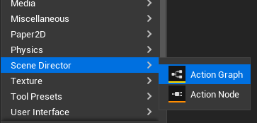
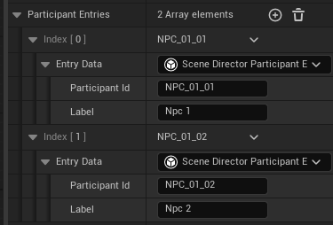
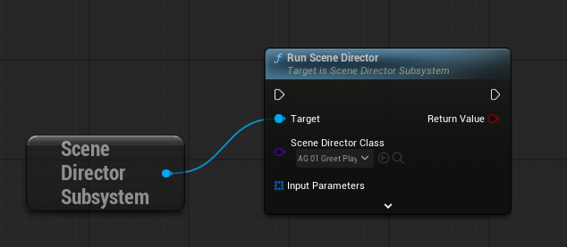
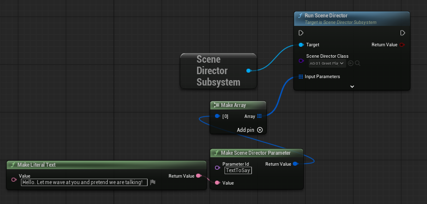
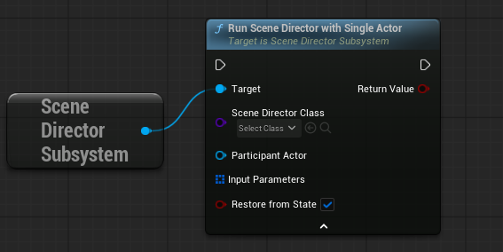

Scene Director Basic Usage
This guide covers everyday usage: run a graph, pass parameters, and configure participants.
Minimal setup
Before first launch:
- Create or choose an Action Graph asset.

- Fill
Participant Entriesfor every actor that has a role in the scene (unless you use single runtime participant mode).

- Optionally define graph input parameters.

What is a participant?
A participant is a role in the graph, not a specific actor instance.
Examples of roles:
ShopKeeperGuardATargetNPC
At runtime, Scene Director maps each role to a real actor automatically. By default it matches the participant id against the target actor's tags (Actor.Tags) and component tags (ComponentTags); this lookup can be fully replaced with custom strategies like Gameplay Tags, data assets, or per-project registries.
In short:
- Participant = "who should do this action" in graph logic.
- Actor = actual object in the world that gets assigned to that role.
Graph settings
Key settings on each Action Graph asset:
Participant Entries— list of participant roles for multi-participant graphs; runtime assigns an actor to each role.Use Single Runtime Participant— all participant tasks use one actor passed at launch. Good for shared NPC behaviors and reusable per-actor nested graphs.Input Parameters— optional values passed when starting a graph (mood, speed, target id, etc.).Priority— when a new root launch shares a participant actor with an already running root graph, higher priority wins. Graphs on different actors can run in parallel. See Runtime Control.Clear Preempted Graph State— when this graph stops a lower-priority conflicting run, also clear that run's persisted in-memory state.State Persistence— master switch for resume support. When enabled, more options appear:
- Capture Policy — when runtime snapshots are taken (On Abort, On Node Transition, both, or Never). - Completed Policy — keep or clear the snapshot after a normal graph finish (Clear or Keep In Memory). - Auto Start On State Restore — after load/import, automatically restart graphs that were running at save time. Not available for Single Runtime Participant graphs (they need an explicit actor at launch).
Start a graph
Use Get Scene Director Subsystem, then call Run Scene Director.

With parameters:

On a specific actor (in Single Runtime Participant mode)

The launch nodes expose Restore From State (advanced). It defaults to true. Set false to force a fresh run. See State Persistence.
Regular graph launch:
USceneDirectorSubsystem* SD = USceneDirectorSubsystem::Get(WorldContextObject);
if (!SD) { return; }
// Parameters are optional
TArray<FSceneDirectorParameterValue> Params;
Params.Add(USceneDirectorParameterLibrary::MakeParameter(TEXT("Mood"), MoodValue));
const bool bStarted = SD->RunSceneDirector(SceneDirectorClass, Params);
// Third argument bRestoreFromState defaults to trueSingle Runtime Participant graph launch:
USceneDirectorSubsystem* SD = USceneDirectorSubsystem::Get(WorldContextObject);
if (!SD || !IsValid(TargetActor)) { return; }
TArray<FSceneDirectorParameterValue> Params;
Params.Add(USceneDirectorParameterLibrary::MakeParameter(TEXT("Mood"), MoodValue));
const bool bStarted = SD->RunSceneDirectorWithSingleActor(
SceneDirectorClass,
TargetActor,
Params);Use RunSceneDirectorWithSingleActor when the graph has Use Single Runtime Participant enabled and you want to run it for one specific actor.
You can also start graphs from an Action Trigger Volume placed in the level. See World Helpers.
Graph completion
A graph ends automatically once there are no more nodes that could still be launched — you don't need to call any explicit "stop" function. When the last running branch finishes, the run is over.
To stop runs manually, use Runtime Control.
See also
- Built-in nodes — quick reference for stock task nodes.
- Action Graph Toolkit — macros, portals, nested graphs, flow nodes.
- State Persistence — save/load graph progress.
- Runtime Control — stop graphs, priority, repeat launch.